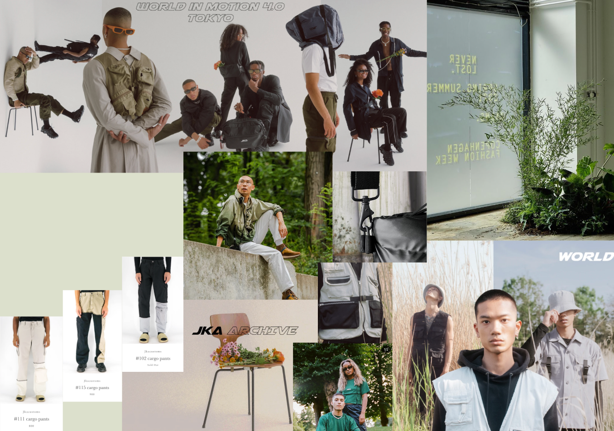
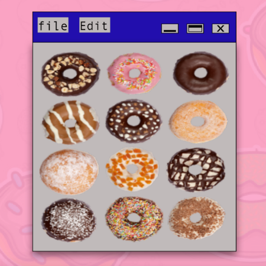
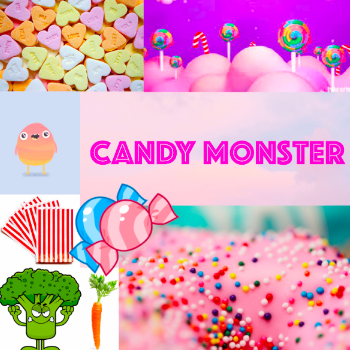
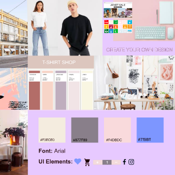

Grundlæggende indhold
I dette tema lærte vi om videoproduktion, herunder forarbejdet inden selve optagelse, selve optagelsen, samt postproduktion. Vi blev introduceret til grundlæggende faglige begreber inden for video og fotoproduktion, og skulle benytte færdigheder fra de tidligere temaer til vores slutprodukt.
Vi skulle to og to filme en video og derefter klippe den hver for sig. Vi lavede brainstorm og kom derefter frem til vores koncept og hovedperson, Carlos som i sin fritid skater. Vi lavede et storyboard over de frames, vi gerne ville have samt interviewguide. Filmen begynder med et establishing shot. Jeg brugte B-rolls med en relevant handling og som havde betydning for historien. I dette tilfælde skatede vores hovedperson på en skatebane. Jeg valgte at klippe filmen kronologisk, så seerne fulgte vores hovedperson fra han kom cyklende til at han skatede rundt i parken mens der var klippet imellem de forskellige indstillinger. Vi filmede mange af de samme indstillinger fra forskellige vinkler bl.a. frøperspektiv og normal perspektiv. Jeg ville have følelsen af dynamik, så jeg klippede i bevægelserne mellem indstillingerne. Jeg valgte også at bruge en medium shot til sidst, for at vise omgivelserne samtidig skabe følelser og intensitet. Jeg valgte at gøre brug af continuity editing, for at gøre klipningen usynlig, da vores hovedperson skatede rundt. Jeg ville have det til at ligne et one-take optagelse.
Til vores hovedopgave "redesign af en virksomhed" valgte vi at arbejde med JKA Customs. Vi startede med at lave et scrumboard i trello samt et burndownchart. Vi testede hjemmesiden ved brug af Bert test, 5 sekunders test .Derefter lavede vi en virksomhedsanalyse og vi begyndte på en brainstorm over hjemmesidens struktur, funktioner og udtryk. Vi lavede moodboard, Styletile, storyboard, funtionalitetsliste, wireframe, XD prototype (i desktop og mobilformat). Vi lavede også en indholdsoversigt over sitet for at vide præcist, hvad vi skulle bruge af elementer, hvilket gjorde det mere overskueligt. Vi brugte en del af de eksisterende elementer, men designet på en anden måde. Eks. var burgermenuen og kurven den samme som på det eksisterende site.
Resultatet af idegenereringen blev, at vi produrede to forskellige videoer ud fra de samme klip. Vi lavede en SoMe video på 1 minut, som indeholdt fængende videoklip, der var klippet til musikken. SoMe-videoen indeholdt endvidere kun b-roll og var uden tale. I denne video valgte vi , at fokusere på akontinuerlig klipning, da vi gerne ville belyse processen og bryde videoens sammenhæng. Vi har valgte at tilføje musik til videoen og gjorde dermed et forsøg på, at have et højt klippetempo, som følger musikken. Vi tilføjede en transition til sidst, for at belyse afslutningen. Da videoen skulle redigeres, stødte vi på enkelte problemer, da lyset havde en klar gul tone på klippene - dog kunne vi ændre det meste ved hjælp af color grading. Den anden video brugte vi som baggrundsvideo på About us-siden. Den kørte i loop uden lyd. Vi fokuserede på billedets balance, så der bliver skabt harmoni. Vi var særlige opmærksomme på detaljerne, ved at filme nogle forskellige close up og inddrage 5 skuds reglen. Da der kom tekst over videoen, valgte vi en langsommere klipperytme i denne video. På vores billeder havde vi også særligt fokus på komposition og perspektiver, da vi gerne ville have dynamik og symmetri i vores billeder.
I vores redesign havde vi bl.a. kodet en "karrusel" ind på forsiden, hvori vi satte produktbilleder og fokuserede på CSS-delen. På shop siden rettede vi billedformaterne, så der kom en symmetrisk balance på hjemmesiden. Derudover Indsatte vi hover effekt for at skabe yderligere dynamik på sitet. På produktsiden ændrede vi billedformaterne, så de var større og tydeligere. Ved hjælp af CSS rykkede vi teksten i højre side på desktopversion.

You may also like


